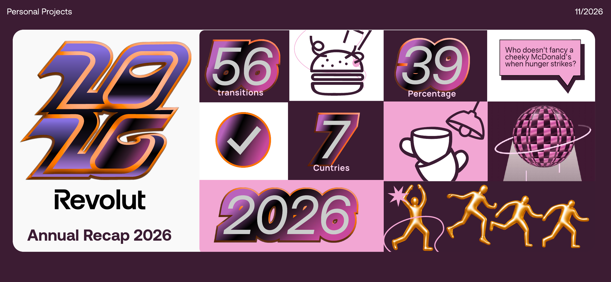
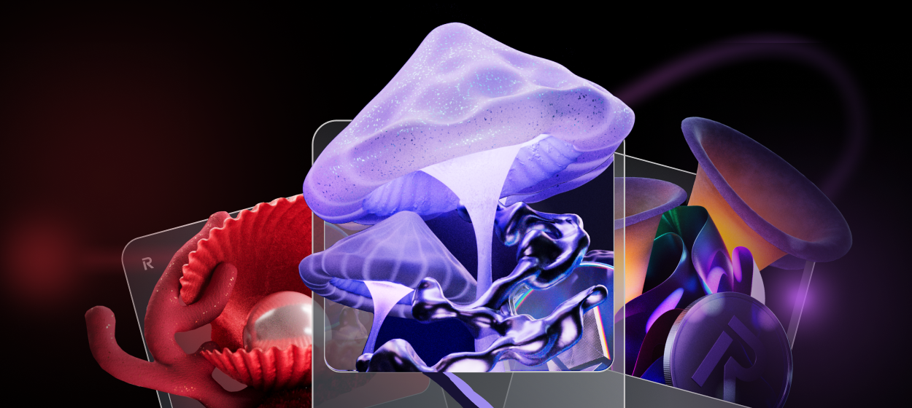
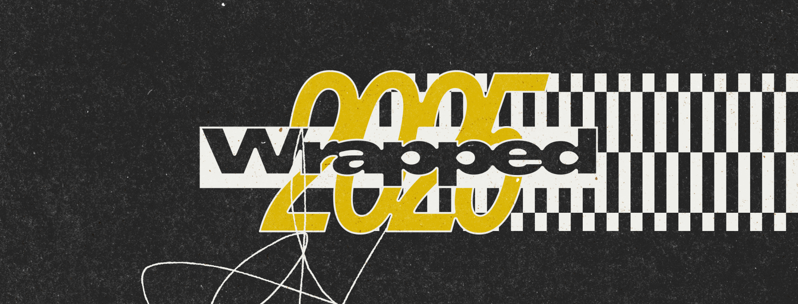
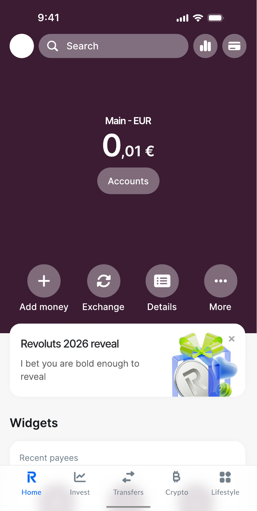
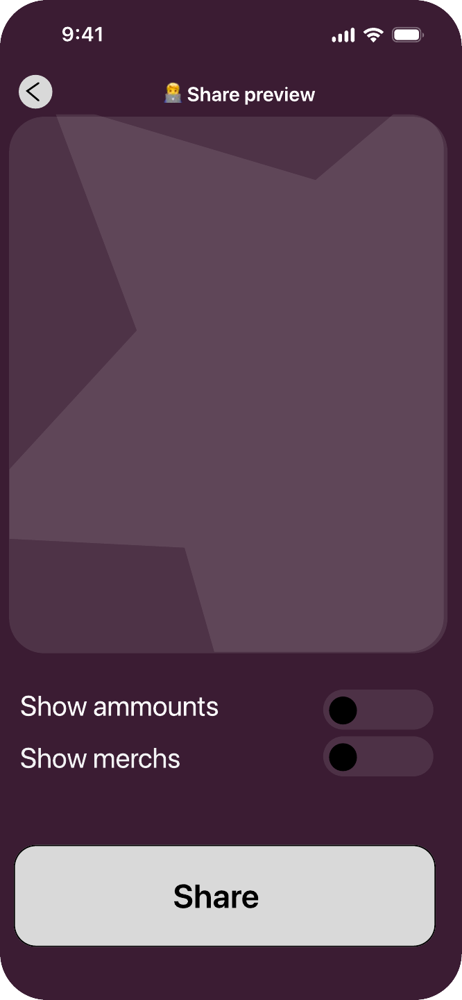

01 Discover
User ActionOpens the annual recap and starts the journey.
User Response
“Oh, nice! I didn’t know Revolut did this.”

Revolut Wrapped 2026 is a concept for an interactive annual financial recap that transforms everyday transactions into unexpected little stories.
Through playful 2D/3D motion, personalised insights and a touch of British humour, it aims to make financial data more memorable, shareable and emotionally engaging.



Images: Revolut, Spotify, NetEase Cloud Music
Annual recaps can bring back little moments people have almost forgotten, turning everyday habits into unexpected surprises. I believe these small discoveries can help users feel more connected to Revolut.
Visually, I kept Revolut’s bold 3D style, mixing it with 2D elements and a touch of British humour to tell these everyday stories, like this one:
“You always treated yourself a little better on Friday nights.
39% more than on weekdays.
Apparently, your weekend starts before you even get home.”
Revolut is already part of everyday life. Let’s make those moments visible, one little story at a time.
Turn transaction data into a personal annual story.
DRAG TO SPIN ↗
I use a to give the report an annual feel. carry a consistent visual thread. A and bold type bring energy, while the imagery moves .
HOVER OR TAP THE HIGHLIGHTED WORDS
A scenario-based journey from discovery to sharing.
User ActionOpens the annual recap and starts the journey.
“Oh, nice! I didn’t know Revolut did this.”
User ActionBrowses personalised moments (e.g. the Monday coffee ritual).
“That’s so me — same coffee, same price, 56 times!”
User ActionSees the yearly summary and discovers patterns about their life.
“I didn’t realise I travelled to 7 countries this year!”
User ActionChooses a moment or summary card and shares to Instagram Stories.
“This is fun to share!”
How I collaborated with AI





01 / A YEAR OF MOMENTS
189 transitions during 2026.
That’s 1,284 little moments.

Gesture-led movement through the story.
Gold figures connect the moments.

Bold text gives each moment a voice.
Motion links one scene to the next.